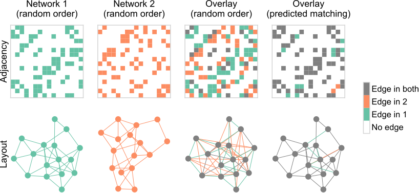

Graph matching for neuroscience
Contents
Graph matching for neuroscience#
Alignment between networks#

Graph matching - what is it?#

How do we measure it?#
How do we measure it?#
\(\textcolor{#66c2a5}{A}\) is the first adjacency matrix \(\textcolor{#fc8d62}{B}\) is the second
How do we measure it?#
How do we measure it?#
\(\mathcal{P}\) is the set of permutation matrices
How do we measure it?#
We take the difference of these adjacency matrices (under some permutation)
Why is it hard#
Search space is absurdly large
\(|\mathcal{P}| = n!\)
\(n = 335 \rightarrow |\mathcal{P}| \approx 10^{82}\) (more than number of atoms in universe)
Search space is not convex
\(0.5 P_1 + 0.5 P_2 \notin \mathcal{P}\)
Example in the larva#
Have seeds?#
Have multiple edge types?#
Have extra similarity information?#
Have connections across networks?#
Have soft seeds?#
TODO
Have group constraints?#
TODO
Graph matching for neuroscience#
\(\min_{P \in \mathcal{P}_s} \left [ \sum_{i=1}^K \|A_{LL}^{(i)} - P A_{RR}^{(i)} P^T\|_F^2 + \sum_{i=1}^K \|A_{LR}^{(i)} P^T - P A_{RL}^{(i)} \|_F^2 + tr(S P^T) \right ]\)
where:
\(\mathcal{P}_s\) is the set of permutation matrices which respect fixed seeds, \(s\), where the seeds give a known correspondence between some of the neurons.
\(A_{LL}\) and \(A_{RR}\) are the within-hemisphere (ipsilateral) subgraphs.
\(A_{LR}\) and \(A_{RL}\) are the between-hemisphere (contralateral) subgraphs.
\(S\) is a matrix of similarity scores between neurons, e.g. morphology (NBLAST).
\(K\) is the number of layers or edge types e.g. axo-axonic, axo-dendritic, etc.